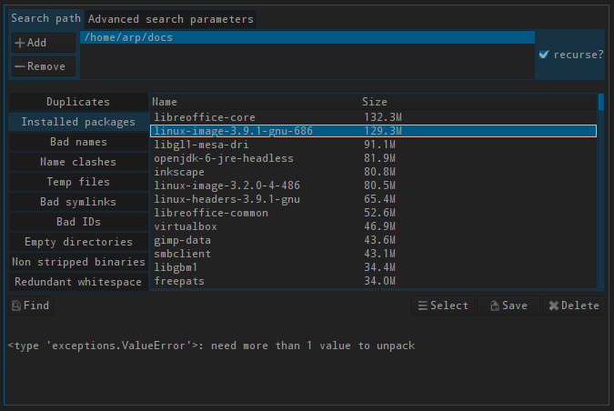

lang fr|gb

check and clean with fslint
FSlint is a search and check tool allowing you to clean your system, delete duplicated datas, check encodage, show installed packages... gui interface is written in pyGTK.
you can find fslint in the livarp-menu: applications section:utils.
spceficities
- Duplicates : duplicated files detection based on their size, and MD5/SHA1 control sum. once detected, you can delete or merge selected duplicated files.
- Installed packages: lists installed packages on your system.
- Temp files: clean temporary files.
- Bad links : detect and delete (if needed) bad links.
- Correction des extensions : Détecter et corriger les extensions qui ne correspondent pas au type réel.
- Name clashes: list programs that have same nameswith different path.
- detect and delete empty directories.
- names correction with uneeded whitespace.
- rename file-names with bad character ( /!*@~[]…)
- uninstall packages (prefer apt or synaptic)
usage
Search is done in your /home directory by default. you can modify this setting by adding or deleting path from the tabs on top left corner.
« advanced search parameters » allows you to define extra parameters such as directory to exclude or special options passed to the 'find' command.